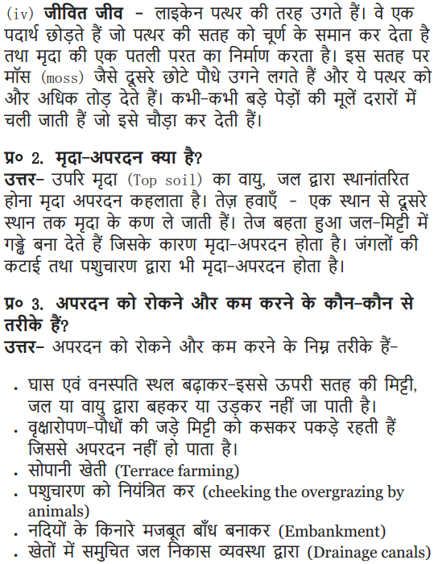

NCERT Solutions Class 9 Science Chapter 14 Natural Resources – Here are all the NCERT solutions for Class 9 Science Chapter 14. This solution contains questions, answers, images, step by step explanations of the complete Chapter 14 titled Natural Resources of Science taught in class 9. If you are a student of class 9 who is using NCERT Textbook to study Science, then you must come across Chapter 14 Natural Resources. After you have studied lesson, you must be looking for answers of its questions. Here you can get complete NCERT Solutions for Class 9 Science Chapter 14 Natural Resources in one place. For a better understanding of this chapter, you should also see Chapter 14 Natural Resources Class 9 notes , Science.
NCERT Solutions for Class 9 Science Chapter 14 Natural Resources
Topics and Sub Topics in Class 9 Science Chapter 14 Natural Resources:
- Natural Resources
- The Breath of Life: Air
- Water: A Wonder Liquid
- Mineral Riches in the Soil
- Biogeochemical Cycles
- Ozone Layer
These solutions are part of NCERT Solutions for Class 9 Science. Here we have given Class 9 NCERT Science Textbook Solutions for Chapter 14 Natural Resources.
Page: 193
Question 1. How is our atmosphere different from the atmosphere on Venus and Mars? (SA II – 2013)
Answer: Our atmosphere contains a mixture of many gases like nitrogen (78.08%), oxygen (20.95%), carbon dioxide (0.03%) and water vapor (in varying proportion). Whereas the atmosphere on Venus and Mars is mainly comprised of carbon dioxide. This carbon dioxide constitutes up to 95-97% of the atmosphere on Venus and Mars. It is supposed that due to this reason no life is known to exist on these planets.
More Resources for CBSE Class 9
- NCERT Solutions
- NCERT Solutions Class 9 Maths
- NCERT Solutions Class 9 Social Science
- NCERT Solutions Class 9 English
- NCERT Solutions Class 9 Hindi
- NCERT Solutions Class 9 Sanskrit
- NCERT Solutions Class 9 IT
- RD Sharma Class 9 Solutions
Question 2. How does the atmosphere act as a bblanket?(SA II – 2012, 13)
Answer: It is a known fact that, air is a bad conductor of heat and our atmosphere contains mainly the air. Due to this reason, the atmosphere keeps the average temperature of the Earth fairly steady during the day and even during the course of the whole year. The atmosphere prevents the sudden increase in temperature during the daylight hours and during the night, it slows down the escape of heat into outer space.
Formulae Handbook for Class 9 Maths and ScienceEducational Loans in India
Question 3. What causes winds ? (SA II – 2012, 13)
Answer: Winds are caused due to unequal heating of atmospheric air. This phenomena can be easily seen near coastal regions during the daytime. The air above the land gets heated faster and starts rising. As this air rises, a region Of low pressure is created and air over the sea moves into this area Of low pressure. The movement of air from one region to the other Creates winds. During the day, the direction of the wind would be from the sea to the land.
Question 4. How are clouds formed ? (SA II – 2013)
Answer:The water evaporates due to heating up Of water bodies and other biological activities. The air also heats and rises. On rising, it expands and cools to form tiny droplets. These droplets grow bigger, expand and form clouds. The collection Of dust and other suspended particles facilitate the process.
Question 5. List any three human activities that you think would lead to air pollution. (SA II – 2013)
Answer: Human activities that would lead to air pollution
(i) Excessive use and burning of fossil fuels like coal and petroleum produces different oxides of nitrogen and sulphur. These are not only dangerous to our respiratory system but also leads to acid rain.
(ii) Incomplete combustion of various fuels forms unburnt carbon particles which lowers the visibility, especially in cold weather when water also condenses Out of air. This is known as smog and is a visible indication Of air pollution.
(iii) Large usage Of automobiles and improperly tuning of engines leads to the formation of carbon monoxide gas and Other oxides of nitrogen which causes lot of respiratory problems.
(iv) Forest fires, excessive mining and ore refining, excessive use of chlorofluorocarbons and excessive industrialisation leads to air pollution.
Page 194:
Question 1. Why do organisms need water ? (SA II – 2012)
Answer: Organisms need water due to the following
(i) All cellular processes take place in a water medium.
(ii) All the reactions that take place within our body and within the cells occur between substances that are dissolved in water.
(iii) Substances are also transported from one part of the body to the other in a dissolved form.
(iv) Water makes up about 70% of body weight Of all living organisms.
(v) It helps in the digestion of food and absorption of nutrients in the blood. Hence, organisms need to maintain the level of water within their bodies in order to stay alive. It helps in maintaining body temperature.
Question 2. What is the major source of freshwater in the city/town/village where you live ?
Answer: The major sources of freshwater in the city (town/ village is the underground water which is mostly taken out with the help of hand pumps or tube wells. The rivers flowing in the nearby areas, lakes and ponds also serve as the source of freshwater.
Question 3. DO you know any activity which may be polluting these water sources?
Answer: There are many activities which cause pollution Of water sources such as :
(i) Dumping of waste from factories, sewage from our towns and cities into rivers or lakes.
(ii) Discharging hot water from cooling towers into the water bodies affect the breeding capacity of aquatic organisms.
Page 196
Question 1. How is soil formed ? (SA II – 2013, 2014)
Answer: The formation of soil takes place in this way :
Over long periods of time, thousands and millions Of years, the rocks at or near the surface of the are broken down by various physical, chemical and some biological processes. The end product of this breaking down is the fine particles of soil. There are many other factors which play a vital role in the formation of soil. These factors are :
(i) The Sun : It causes heating of rocks which causes cracking and ultimately breaking up into smaller pieces.
(ii) Water: It breaks rocks both by freezing and fast flow.
(iii) Wind : It causes erosion of rocks similar to as done by fast flowing water. It also carries sand from one place to the other like water does.
(iv) Living organisms : Lichens and moss plants grow on the rock surface and cause rock surface to powder down and form a thin layer of soil. The roots of big trees sometimes go into cracks in the rocks and as the roots grow bigger, the crack is forced bigger.
Question 2.What is soil erosion ? (SA II 2012)
Answer: The removal of topsoil which is rich in humus and nutrients by flowing water or wind is known as soil erosion. If this process continues further then all soil may get washed away and the rocks underneath may get exposed. It may lead to the loss of all valuable resources because nothing grows as such on the rocks.
Question 3. What are the methods of preventing or reducing soil erosion ? (SA II – 2012)
Answer: The methods of preventing soil erosion are :
(i) Afforestation : Forests reduce erosion as the roots of trees hold the soil in place.
(ii) Shelter belts : Trees planted in lines or hedges around farmland reduce erosion by reducing the speed of the wind.
(iii) Contour ploughing : Farmers plough land so that furrows lie across the natural slope of the land. These furrows trap water and do not allow it to flow down carrying the topsoil.
(iv) Terrace (or step) farming : A terraced hillside is less likely to be eroded than a natural hillside. Here a series of steps formed by horizontal strips supported by walls, catch the descending water. It gives the water sufficient time to percolate into the soil and nourish the crop.
(v) Soil cover : Soil left bare after harvesting a crop is often covered with dried vegetation to prevent erosion. Steep slopes that cannot be ploughed are covered with grass or pasture crops.
(vi) Preventing overgrazing : As the grass has a tendency to bind soil molecules, so even a very little grass on a field prevents erosion of soil. But if the grass is overgrazed, it exposes the soil to erosion.
Page 201
Question 1. What are the different states in which water is found during the water cycle? (SA II – 2011)
Answer: All three different states of water can be seen during the water cycle. These states are :
(i) Gaseous state (In the form Of water vapour which evaporates from the surface water). Liquid state (It is formed by the condensation of water vapour and can be Seen in the form of rain).
(ii) Solid state (It is formed by the freezing Of liquid droplets in the upper layer of atmosphere which can be seen in the form Of snow, hail Or sleet).
Question 2. Name two biologically important compounds that contain both oxygen and nitrogen. (SA II – 2011)
Answer: Proteins and nucleic acids (DNA and RNA).
Question 3. List any three human Which would lead to an increase in the carbon dioxide content of air. (SA II – 2011)
Answer: Three human activities which would lead to an increase in the C02 content of air are :
(i) Respiration : It is the natural process Of release Of C02 by both plants and animals. But this release is neither dangerous nor it has any adverse effect on our environment.
(ii) Combustion of fuels : The various types of fuels are burnt to provide energy for various needs like heating, cooking, transportation and industrial fuels.
(iii) Deforestation : Trees help in the conversion Of C02 into organic compounds such as glucose, starch, etc., by the process of photosynthesis. When these trees are cut non-judiciously, then the level of C02 increases in our environment.
Question 4. What is the greenhouse effect ? (SA II – 2011)
Answer: Some gases prevent the escape of heat from the Earth. An increase in the percentage Of such gases in the atmosphere would cause the average temperatures to increase worldwide and this is called the greenhouse effect.
Question 5. What are the two forms of oxygen found in the atmosphere ? (SA II 2011)
Answer: (i) Elemental oxygen is normally found in the form Of a diatomic molecule (02) in the lower regions Of the atmosphere to the extent of 21 %. It is non-poisonous form Of oxygen.
(ii) But in the upper reaches Of the atmosphere (stratosphere), it occurs in the form of ozone, containing three atoms of oxygen and having the molecular formula 03. It is the poisonous form of oxygen.
Some other forms of Oxygen :
It also Occurs extensively in the combined form in the Earth’s crust as well as also in the air in the form of carbon dioxide. In the crust, it is found as the oxides of most metals and silicon, and also as carbonate, sulphate, nitrate and other minerals. It is also an essential component Of most biological molecules like carbohydrates, proteins, nucleic acids and fats (or lipids).
Question 1. Why is the atmosphere essential for life (SAII – 2011)
Answer: Atmosphere is essential for life because of the following masons :
(i) It keeps the average temperature of the earth fairly steady during the day and even during the course of the whole year.
(ii) It prevents the sudden increase in temperature during the daylight hours.
(iii) It contains all the important gases which are required for sustaining life on earth.
These gases are :
(a) Oxygen for respiration of living organisms and oxidation.
(b) Carbon dioxide for photosynthesis in plants and for making food.
(c) Nitrogen for providing inert atmosphere and making proteins.
(iv) The stratosphere region (16-23 km from the surface of Earth) of atmosphere contains a thick layer of ozone which filters the harmful UV radiation from Sun. If these radiations reach on the surface of Earth, then they may cause cancer in animals and are also harmful for plants.
Question 2. Why is water essential for life ? (SAII – 2011)
Answer: Water is considered essential for life because of the following reasons :
(i) All cellular processes take place in water medium.
(ii) All the reactions that take place within our body and within the cells occur between substances that are dissolved in water.
(iii) Substances are also transported from one part of the body to the other in a dissolved form.
(iv) Water makes up about 70% of body weight of all living organisms.
(v) It helps in the digestion of food and absorption Of nutrients in the blood. Hence, organisms need to maintain the level of water within their bodies in order to stay alive.
(vi) It helps in maintaining body temperature.
Question 3. How are living organisms dependent on the soil? Are organisms that live in water totally independent Of soil as a resource ?
Answer: Living organisms are dependent on the soil in the following ways :
(i) Soil provides a natural habitat for various different organisms (such as bacteria, fungi, algae) which help in improving the quality of the soil. Thus, they maintain the fertility of the soil.
(it) Number of insects, animals like rats, rabbits, etc., build their home in the soil.
(iii) Earthworms perform all their activities in the soil. They maintain fertility also as their excreta is rich in nitrogen.
(iv) Soil provides anchorage and nutrients to the plants for their growth and development.
Yes, all organisms that live in water are totally dependent on soil as a resoure :
The mineral nutrients are present in water in the dissolved form. But their recycling takes place only with the help Of decomposers which are present in the soil beds. Thus, all water bodies has soil beds which contain decomposers for the recycling of nutrients and to convert them into readily absorbable forms.
Question 4. You have seen weather reports on television and in newspapers. How do you think we are able to predict the weather?
Answer: Weather observatories collect information regarding the pattern of temperature, speed of wind, air pressure, ocean features and all other features which can affect the weather. This information is collected by remote sensing and weather forecasting satellites. The information collected is then sent to the meteorological departments which prepare a weather report which is displayed on the maps. This information is further transmitted through radio and television.
Question 5. You might have heard about weather report saying ‘depressions’ in the Way of Bengal have caused rains in some areas. We know that many human activities lead to increasing levels of pollution of the air, water bodies and soil. Do you think that isolating these activities to specific and limited areas wcwld help in reducing pollution ?
Answer: Yes, definitely if these activities are isolated to specific and limited areas, then the level of pollution Of the air, water bodies and soil will ‘decrease. For example
(i) If all the sewage discharge, industrial waste is collected and treated properly before diScharging into water bodies, then obviously aquatic life in these water bodies will be affected to a little extent.
(ii) If hot water from the industries (which is used for cooling machines and other devices) is collected at a common place and cooled and aerated properly before discharging into water bodies. Then this will not affect the breeding capacity of aquatic organisms.
(iii) If all the industries and commercial places of a city/town are located in a particular area which is far away from a residential area. Then all diseases resulting from air pollution could be minimised.
(iv) Above all, if we use only biodegradable substances, then they will get decomposed easily and there will be very little pollution of our precious natural resources.
Question 6. Write a note on how forests influence the quality “four air, soil and water resources.
Answer: Forests influence the quality of air, soil and water resources in the following ways :
- Influence of forests in controlling the quality of air :
(a) Forests help in minimising the level of C02 in the atmosphere. This prevents greenhouse effect and global warming.
(b) Forests reduce environmental temperature which in turn increases the rate of photosynthesis in plants in the surrounding regions.
(c) Some of the trees has the ability to absorb harmful gases present in the atmosphere, e.g., Jamun trees can absorb compounds of lead easily. - Influence of forests in controlling the quality of soil :
(a) The roots of huge trees larger area and prevent erosion of topsoil by holding the soil particles tightly.
(b) Forests also regulate biogeochemical cycles which are responsible for cycling of nutrients and making them available for the plants in the soil,
(c) Many of the decomposing bacteria and nitrogen-fixing bacteria live in close association with the roots of the trees. - Influence of forests in controlling the quality of water :
(a) Forests help in returning pure water back to the surface of earth through rains
(b) Forests help in maintaining the water cycle as well as water resources of the earth.
NCERT Solutions for Class 9 Science Chapter 14 Natural Resources (Hindi Medium).
